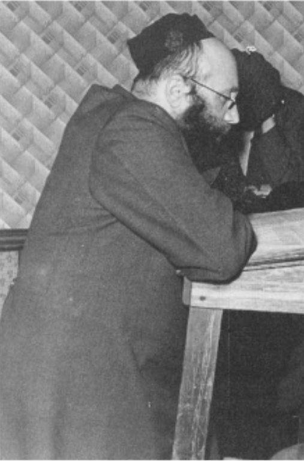

Introductie: Yeshivas Eitz Chaim (in de volksmond bekend als Yeshivat Heide) was de eerste hogere Talmoed-academie (Yeshiva) die in België werd opgericht. Gesticht in 1929 in het bosrijke gehucht Heide, Kalmthout, diende de yeshiva als een belangrijk spiritueel en educatief toevluchtsoord voor jonge joodse mannen uit heel West- en Midden-Europa tijdens het interbellum.
Geschiedenis & Oorsprong
De yeshiva werd in 1929 opgericht door de bekende Thora-geleerde Gaon Rabbijn Shraga Feivel Shapira. De keuze voor Heide, Kalmthout—gelegen ten noorden van Antwerpen—was bewust, aangezien het gebied een populaire zomerbestemming was geworden voor orthodox-joodse gezinnen uit Antwerpen, die de frisse lucht, de rustige omgeving en de schilderachtige dennenbossen waardeerden.
Beginnend met een bescheiden groep studenten verwierf de instelling al snel een reputatie vanwege haar rigoureuze Talmoed-studies en warme, ondersteunende sfeer. Het trok jonge mannen aan, niet alleen uit België, maar ook uit Nederland, Frankrijk, Duitsland, Zwitserland en Oost-Europa, die op zoek waren naar hoger Thora-onderwijs in een rustige omgeving ver weg van de grootstedelijke afleidingen.
Het Campusproject van 1938
Naarmate het aantal studenten groeide, werden de oorspronkelijk gehuurde villa's ontoereikend. In 1936 verkreeg de yeshiva een bouwvergunning om een grote, permanente campus in Heide te bouwen, ontworpen om plaats te bieden aan het groeiende aantal studenten en docenten. In 1938 werd in Heide een historische eerstesteenlegging gehouden, gevierd door rabbijnse leiders en gemeenschapsleden uit heel België.
De snelle escalatie van de vooroorlogse spanningen en de uiteindelijke Duitse inval in België in mei 1940 maakten echter definitief een einde aan de bouw. Tijdens de nazi-bezetting moest de yeshiva sluiten en raakten studenten en staf verspreid; velen werden gedeporteerd of gingen in het verzet, en verschillende kwamen om in de Holocaust.
Naoorlogse Heroprichting
Na de bevrijding van België werden onmiddellijk inspanningen geleverd om de historische instelling nieuw leven in te blazen. De yeshiva werd tijdelijk heropgericht in de naburige gemeente Kapellen, waar overlevenden en vluchtelingen werden verwelkomd. In 1961 verhuisde de yeshiva definitief naar de wijk Wilrijk in Antwerpen, waar zij vandaag de dag nog steeds bloeit als een centrale pijler van het Antwerps-joodse religieuze leven, en zo het erfgoed van de oorspronkelijke in Heide gestichte instelling bewaart.
Gemeenschapsarchief

